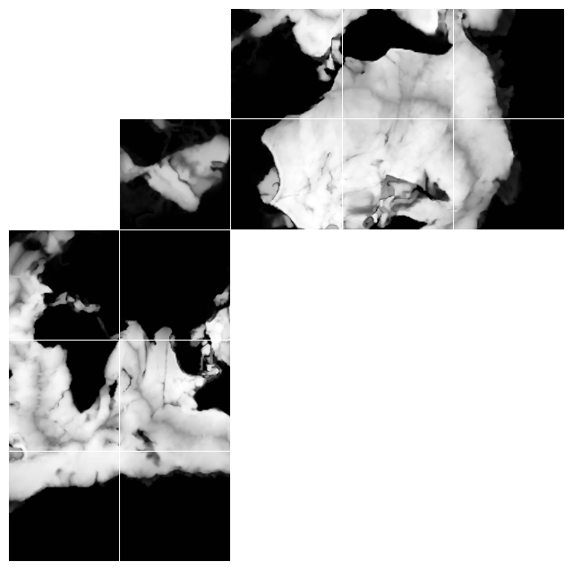
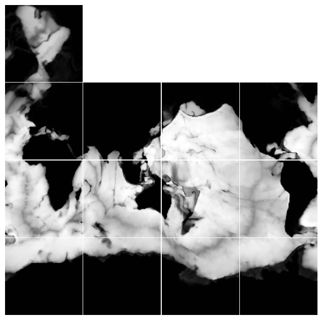
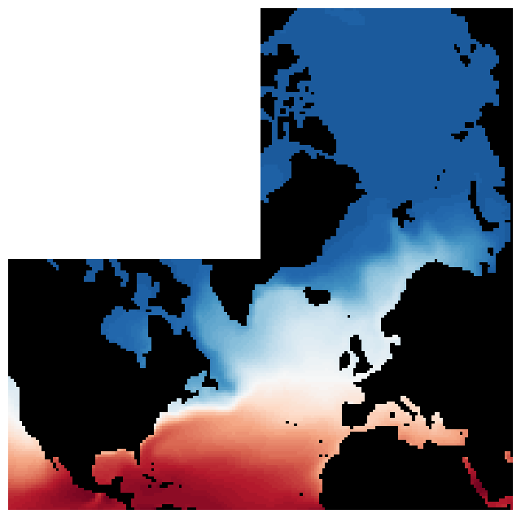

Acceso a ECCOv4 mediante OPeNDAP de NASA Earthdata en la nube#
Este notebook demuestra el acceso a salidas del modelo ECCOv4. Se puede encontrar información general sobre el dataset ECCO en el sitio web de PODAAC (ver aquí).
Requisitos para ejecutar este notebook
Tener una cuenta Earthdata Login
Python>=3.12
Objetivos
Usar pydap, Xarray y OPeNDAP para
Descubrir todas las URLs OPeNDAP asociadas con una colección de datos ECCOv4. Este es un dataset Level 4 definido en la
CubedSphereECCOv4Autenticarse EDL.
Explorar la colección
ECCOv4y filtrar variables y coordenadasConsolidar metadatos a nivel de colección
Descargar/transmitir un subconjunto de interés
Algunas variables de enfoque son
Autor: Miguel Jimenez-Urias, ‘25
import xarray as xr
import datetime as dt
import earthaccess
import matplotlib.pyplot as plt
import numpy as np
import pydap
from pydap.net import create_session
from pydap.client import get_cmr_urls, consolidate_metadata, open_url
print("xarray version: ", xr.__version__)
print("pydap version: ", pydap.__version__)
xarray version: 2026.4.0
pydap version: 3.5.11.dev1+ge35cae66d
Explorar la colección ECCOv4#
Toda la simulación ECCOv4 está disponible mediante el servicio OPeNDAP de NASA, pero está dividida en varias colecciones. Cada colección está disponible mediante archivos netCDF4. En este tutorial accesaremos temperatura y salinidad en la superficie oceánica del océano NorAtlántico. Subdividir la CubedSphere requiere código especializado. Como los datos están organizados en mosaicos (o tiles/faces en ingles), nos enfocaremos, por simplicidad, solo en subdividir los tiles.
Para más información sobre Ocean Temperature and Salinity, puedes consultar este recurso: https://podaac.jpl.nasa.gov/ECCO?sections=data
ecco_ts_ccid = "C1991543728-POCLOUD" #
time_range = [dt.datetime(2007, 1, 1), dt.datetime(2017, 12, 31)] # One month of data
cmr_urls = get_cmr_urls(ccid=ecco_ts_ccid, time_range=time_range, limit=1000) # you can incread the limit of results
print("################################################ \n We found a total of ", len(cmr_urls), "OPeNDAP URLS!!!\n################################################")
################################################
We found a total of 133 OPeNDAP URLS!!!
################################################
Autenticar#
Usaremos earthaccess heredar el Token de EDL, y utilizarlo directamente al acceder los archivos mediante OPeNDAP.
from earthaccess.exceptions import LoginStrategyUnavailable
try:
auth = earthaccess.login(strategy="netrc", persist=True) # you will be promted to add your EDL credentials
except LoginStrategyUnavailable:
auth = earthaccess.login(strategy="interactive", persist=True)
# pass Token Authorization to a new Session.
my_session = create_session(session=auth.get_session())
Explorar variables en la colección y filtrar para conservar solo las deseadas#
Aquí demostramos pydap como herramienta exploratoria de metadatos. Sin descargar el archivo remoto, PyDAP y el protocolo DAP4 nos permitirán conocer:
Nombres, tamaños y atributos de variables.
Dimensiones y coordenadas.
Construir una expresión de restricción OPeNDAP para filtra el numero de variable a descargar.
pyds = open_url(cmr_urls[0].replace("https", "dap4"), session=my_session)
pyds.tree()
.OCEAN_TEMPERATURE_SALINITY_mon_mean_2006-12_ECCO_V4r4_native_llc0090.nc
├──XG
├──Zp1
├──Zl
├──YC
├──XC
├──SALT
├──YG
├──XC_bnds
├──Zu
├──THETA
├──Z_bnds
├──YC_bnds
├──time_bnds
├──Z
├──i
├──i_g
├──j
├──j_g
├──k
├──k_l
├──k_p1
├──k_u
├──nb
├──nv
├──tile
└──time
Note
Los archivos netCDF son autodescriptivos y a menudo contienen toda la información necesaria para interpretar los datos. A nivel de colección (dataset), mucha de esta información está duplicada en cada archivo. Con OPeNDAP podemos reducir la cantidad de datos procesados/descargados con Constraint Expressions.
Nos interesan solo Salinity (SALT) y Temperature (THETA), y las dimensiones/coordenadas extra necesarias para trabajar con estos arreglos. Usamos PyDAP para ayudarnos a averiguarlo.
pyds['THETA'].dims
['/time', '/k', '/tile', '/j', '/i']
pyds['SALT'].dims
['/time', '/k', '/tile', '/j', '/i']
pyds['THETA'].coordinates, pyds["SALT"].coordinates
('YC Z XC time', 'YC Z XC time')
Filtrar por nombres de variables (CEs)#
Usamos la información sobre dimensiones y coordenadas para filtrar más todas las variables posibles en el dataset. Lo logramos agregando un parámetro de consulta de la forma:
<base_url> + ?dap4.ce=/var_name1;...
Cualquier nombre de variable incluido en la expresión de consulta será procesado y todos los demás serán ignorados.
Note
También puedes construir la URL completa con expresiones de restricción de forma interactiva, seleccionando manualmente las variables en el Data Request Form del dataset y seleccionando Copy (Raw) Data URL. Para ir a esta página, necesitas añadir .dmr a cada URL opendap e insertarla en un navegador.
dims = pyds['THETA'].dims
Vars = ['/THETA', "/SALT"] + dims
# Below construct Contraint Expression
CE = "?dap4.ce="+(";").join(Vars)
print("Constraint Expression: ", CE)
Constraint Expression: ?dap4.ce=/THETA;/SALT;/time;/k;/tile;/j;/i
URLs DAP4#
Para declarar al protocolo DAP4 reemplazaremos el esquema de cada URL por dap4. DAP4 es un protocolo relativamente nuevo (comparado con DAP2) y se usa ampliamente en NASA. NOTA: esto solo indicara a Xarray+Pydap que tipo de protocolo utilizar al comunicarse con el servidor de OPeNDAP. dap4 no reemplazara a https, es solo un artefacto interno de pydap para declarar el protocolo.
ECCO_urls = [url.replace("https", "dap4") + CE for url in cmr_urls]
ECCO_urls[0]
'dap4://opendap.earthdata.nasa.gov/providers/POCLOUD/collections/ECCO%20Ocean%20Temperature%20and%20Salinity%20-%20Monthly%20Mean%20llc90%20Grid%20(Version%204%20Release%204)/granules/OCEAN_TEMPERATURE_SALINITY_mon_mean_2006-12_ECCO_V4r4_native_llc0090?dap4.ce=/THETA;/SALT;/time;/k;/tile;/j;/i'
CubedSphere: visualizar profundidad en la malla nativa#
Antes de continuar, exploramos la topología compleja del dataset ECCO mediante el archivo Grid.
Note
Muchas de las variables de coordenadas del archivo Temperature/Salinity también están presentes en el archivo Grid.
Los datos ECCO están definidos sobre una Cube Sphere, lo que significa que la malla horizontal contiene una dimensión extra: tile o face. Puedes inspeccionar los datos en su malla nativa graficando todos los datos horizontales sobre una malla. Para eso observamos la variable Depth. Esta NO está incluida en la misma colección que Temperature. Abajo proporcionamos la URL Cloud OPeNDAP, que puede consultarse desde CMR o Earthdata Search.
## Concept collection ID for ECCO grid
grid_ccid = "C2013557893-POCLOUD"
Grid_url = get_cmr_urls(ccid=grid_ccid)[0] # only one element
Grid_url = Grid_url.replace("https", "dap4")
grid_ds = open_url(Grid_url)
grid_ds
<DatasetType with children 'dxC', 'PHrefF', 'XG', 'dyG', 'rA', 'hFacS', 'Zp1', 'Zl', 'rAw', 'dxG', 'maskW', 'YC', 'XC', 'maskS', 'YG', 'hFacC', 'drC', 'drF', 'XC_bnds', 'Zu', 'Z_bnds', 'YC_bnds', 'PHrefC', 'rAs', 'Depth', 'dyC', 'SN', 'rAz', 'maskC', 'CS', 'hFacW', 'Z', 'i', 'i_g', 'j', 'j_g', 'k', 'k_l', 'k_p1', 'k_u', 'nb', 'nv', 'tile'>
Note
Las coordenadas para THETA y SALT están presentes en el archivo único de Grid. Por lo tanto, no las incluiremos en nuestro flujo de trabajo hasta el final.
Descargar una sola variable#
Utilizando solo PyDAP, la siguiente linea de codigo indica a PyDAP descargar la toda variable Depth.
%%time
Depth = grid_ds["Depth"][:].data # <-------- LOADS DATA as in-memory numpy array
CPU times: user 67.1 ms, sys: 11.4 ms, total: 78.5 ms
Wall time: 1.77 s
Depth.shape
(13, 90, 90)
Variable = [Depth[i] for i in range(13)]
clevels = np.linspace(0, 6000, 100)
cMap = 'Greys_r'
fig, axes = plt.subplots(nrows=5, ncols=5, figsize=(8, 8), gridspec_kw={'hspace':0.01, 'wspace':0.01})
AXES = [
axes[4, 0], axes[3, 0], axes[2, 0], axes[4, 1], axes[3, 1], axes[2, 1],
axes[1, 1],
axes[1, 2], axes[1, 3], axes[1, 4], axes[0, 2], axes[0, 3], axes[0, 4],
]
for i in range(len(AXES)):
AXES[i].contourf(Variable[i], clevels, cmap=cMap)
for ax in np.ravel(axes):
ax.axis('off')
plt.setp(ax.get_xticklabels(), visible=False)
plt.setp(ax.get_yticklabels(), visible=False)
plt.show()

Fig. 1. Visualization de la profundidad (positiva) de la simulation mediante la variable Depth . Los datos en los tiles 0-5 siguen C-ordering, mientras que los datos en los tiles 7-13 siguen F-ordering. Los datos en el arctic cap (tile=6) están definidos en una malla de coordenadas polares.
Gráfico con topología corregida
fig, axes = plt.subplots(nrows=4, ncols=4, figsize=(8, 8), gridspec_kw={'hspace':0.01, 'wspace':0.01})
AXES_NR = [
axes[3, 0], axes[2, 0], axes[1, 0], axes[3, 1], axes[2, 1], axes[1, 1],
]
AXES_CAP = [axes[0, 0]]
AXES_R = [
axes[1, 2], axes[2, 2], axes[3, 2], axes[1, 3], axes[2, 3], axes[3, 3],
]
for i in range(len(AXES_NR)):
AXES_NR[i].contourf(Variable[i], clevels, cmap=cMap)
for i in range(len(AXES_CAP)):
AXES_CAP[i].contourf(np.transpose(Variable[6])[:, ::-1], clevels, cmap=cMap)
for i in range(len(AXES_R)):
AXES_R[i].contourf(np.transpose(Variable[7+i])[::-1, :], clevels, cmap=cMap)
for ax in np.ravel(axes):
ax.axis('off')
plt.setp(ax.get_xticklabels(), visible=False)
plt.setp(ax.get_yticklabels(), visible=False)
plt.show()

Fig. 2. Variable de profundidad Depth graficada en una disposición horizontal que aproxima una visualización lat-lon. Sin embargo, los datos en el arctic cap permanecen en una malla de coordenadas polares.
Agregación de datasets mediante Xarray#
Primeramente, nos interesa la region del NorAtlantico. Basado en la visualizacion de la variable de profundidad (Depth) identificamos los siguientes parametros de interes
Superficie oceanica esta definida por el valor
k=0, dondekes la dimensión a lo largo del eje vertical.La region del océano NorAtlántico esta contenida dentro de los tiles
2,6y10.
Ya que el servidor de OPeNDAP esta cerca de la fuente de datos, y para minimizar el tiempo de descarga, nuestro objetivo es instruir al servidor de OPeNDAP que solo descargue el subconjunto de datos de interest, y no mas.
Una nota al usar Xarray para acceder a OPeNDAP#
Cuando se utiliza Xarray, este considera cada URL de OPeNDAP como un solo Chunk. Cuando se genere a una aggregacion virtual de varios archivos remotos mediante Xarray, Xarray primero descargara cada variable en su totalidad, y despues seleccionara la region de interes ya estando todos los datos en la memoria. Este proceso no es data eficiente. Puedes verificar utiliza el argumento chunks al abrir el dataset.
%%time
ds = xr.open_mfdataset(
ECCO_urls,
engine='pydap',
session=my_session,
parallel=True,
combine='nested',
concat_dim='time',
chunks={}, # use the native remote chunking strategy
)
ds
CPU times: user 8.98 s, sys: 824 ms, total: 9.8 s
Wall time: 54 s
<xarray.Dataset> Size: 6GB
Dimensions: (time: 133, k: 50, tile: 13, j: 90, i: 90)
Coordinates:
* time (time) datetime64[ns] 1kB 2006-12-16T12:00:00 ... 2017-12-16T06:...
* k (k) int32 200B 0 1 2 3 4 5 6 7 8 9 ... 41 42 43 44 45 46 47 48 49
* tile (tile) int32 52B 0 1 2 3 4 5 6 7 8 9 10 11 12
* j (j) int32 360B 0 1 2 3 4 5 6 7 8 9 ... 81 82 83 84 85 86 87 88 89
* i (i) int32 360B 0 1 2 3 4 5 6 7 8 9 ... 81 82 83 84 85 86 87 88 89
Data variables:
SALT (time, k, tile, j, i) float32 3GB dask.array<chunksize=(1, 50, 13, 90, 90), meta=np.ndarray>
THETA (time, k, tile, j, i) float32 3GB dask.array<chunksize=(1, 50, 13, 90, 90), meta=np.ndarray>
Attributes: (12/62)
acknowledgement: This research was carried out by the Jet...
author: Ian Fenty and Ou Wang
cdm_data_type: Grid
comment: Fields provided on the curvilinear lat-l...
Conventions: CF-1.8, ACDD-1.3
coordinates_comment: Note: the global 'coordinates' attribute...
... ...
time_coverage_duration: P1M
time_coverage_end: 2007-01-01T00:00:00
time_coverage_resolution: P1M
time_coverage_start: 2006-12-01T00:00:00
title: ECCO Ocean Temperature and Salinity - Mo...
uuid: f32555f0-4181-11eb-bed0-0cc47a3f47a3Xarray trata la variable de datos remota como un chunk individual, sin importar el tamaño del subconjunto OPeNDAP#
ds['THETA']
<xarray.DataArray 'THETA' (time: 133, k: 50, tile: 13, j: 90, i: 90)> Size: 3GB
dask.array<concatenate, shape=(133, 50, 13, 90, 90), dtype=float32, chunksize=(1, 50, 13, 90, 90), chunktype=numpy.ndarray>
Coordinates:
* time (time) datetime64[ns] 1kB 2006-12-16T12:00:00 ... 2017-12-16T06:...
* k (k) int32 200B 0 1 2 3 4 5 6 7 8 9 ... 41 42 43 44 45 46 47 48 49
* tile (tile) int32 52B 0 1 2 3 4 5 6 7 8 9 10 11 12
* j (j) int32 360B 0 1 2 3 4 5 6 7 8 9 ... 81 82 83 84 85 86 87 88 89
* i (i) int32 360B 0 1 2 3 4 5 6 7 8 9 ... 81 82 83 84 85 86 87 88 89
Attributes:
long_name: Potential temperature
units: degree_C
coverage_content_type: modelResult
standard_name: sea_water_potential_temperature
comment: Sea water potential temperature is the temperatur...
valid_min: -2.2909388542175293
valid_max: 36.032955169677734
origname: THETA
fullnamepath: /THETA
Maps: ()Chunks: Algunas recomendaciones#
La variable chunks es muy importante para mejorar el rendimiento. chunks es un diccionario que declara el tamano de cada chunk a lo largo de cada dimension. En el caso de Xarray, chunks determina el tamano de la descarga de los archivos remotos cuanto se descargan de un servidor OPeNDAP. Para mas informacion sobre esto consulta este tutorial de 5 minutos.
En nuestro caso tenemos varias opciones de como declarar la variable chunks al momento de crear el Xarray.Dataset. Estas son:
Minimizar la cantidad de datos que salen de la nube. Esto se logra con el siguiente chunking:
chunks={'k':1, 'tile':1}. Sin embargo, como descargaremos 3 tiles por archivo, esto multiplicará por un factor de 3 la cantidad de solicitudes (requests) hechas al servidor OPeNDAP remoto. Ya descargados y en memoriaXarraylos ensamblara localmente.Rendimiento optimizado. Se logra eligiendo el siguiente chunking:
chunks={'k':1}. Descargará todos los tiles por archivo, pero solo sera la superficie oceanica. En este caso habra menos descargas del servidor aunque sean mas grandes, yXarrayseleccionara los tiles=2, 6 y 10 ya cuando los archivos esten en memoria.
Warning
Incluso con el enfoque de rendimiento optimizado, esto puede no ser rápido. La velocidad de descarga dependerá de la conexión a internet o de la localidad de los datos. En general, el número de solicitudes al servidor será ~600 en este escenario, todas detrás de alguna forma de autenticación.
%%time
ds = xr.open_mfdataset(
ECCO_urls,
engine='pydap',
session=my_session,
parallel=True,
combine='nested',
concat_dim='time',
chunks={'k':1},
)
ds
CPU times: user 8.62 s, sys: 837 ms, total: 9.46 s
Wall time: 34.5 s
<xarray.Dataset> Size: 6GB
Dimensions: (time: 133, k: 50, tile: 13, j: 90, i: 90)
Coordinates:
* time (time) datetime64[ns] 1kB 2006-12-16T12:00:00 ... 2017-12-16T06:...
* k (k) int32 200B 0 1 2 3 4 5 6 7 8 9 ... 41 42 43 44 45 46 47 48 49
* tile (tile) int32 52B 0 1 2 3 4 5 6 7 8 9 10 11 12
* j (j) int32 360B 0 1 2 3 4 5 6 7 8 9 ... 81 82 83 84 85 86 87 88 89
* i (i) int32 360B 0 1 2 3 4 5 6 7 8 9 ... 81 82 83 84 85 86 87 88 89
Data variables:
SALT (time, k, tile, j, i) float32 3GB dask.array<chunksize=(1, 1, 13, 90, 90), meta=np.ndarray>
THETA (time, k, tile, j, i) float32 3GB dask.array<chunksize=(1, 1, 13, 90, 90), meta=np.ndarray>
Attributes: (12/62)
acknowledgement: This research was carried out by the Jet...
author: Ian Fenty and Ou Wang
cdm_data_type: Grid
comment: Fields provided on the curvilinear lat-l...
Conventions: CF-1.8, ACDD-1.3
coordinates_comment: Note: the global 'coordinates' attribute...
... ...
time_coverage_duration: P1M
time_coverage_end: 2007-01-01T00:00:00
time_coverage_resolution: P1M
time_coverage_start: 2006-12-01T00:00:00
title: ECCO Ocean Temperature and Salinity - Mo...
uuid: f32555f0-4181-11eb-bed0-0cc47a3f47a3Incluir los datos de malla#
Ahora accederemos al archivo Grid remoto para incluir algunas variables de malla adicionales. Este nuevo dataset individual se fusionará con nuestro dataset de temperatura/salinidad.
%%time
### create anew session
session = create_session(session=auth.get_session())
### create an individual dataset with only the variables of interest
grid_ds = xr.open_dataset(Grid_url+"?dap4.ce=/Depth;/XC;/YC;/i;/j;/tile", engine='pydap', session=session)
grid_ds
CPU times: user 95.2 ms, sys: 8.76 ms, total: 104 ms
Wall time: 2.85 s
<xarray.Dataset> Size: 1MB
Dimensions: (tile: 13, j: 90, i: 90)
Coordinates:
* tile (tile) int32 52B 0 1 2 3 4 5 6 7 8 9 10 11 12
* j (j) int32 360B 0 1 2 3 4 5 6 7 8 9 ... 81 82 83 84 85 86 87 88 89
* i (i) int32 360B 0 1 2 3 4 5 6 7 8 9 ... 81 82 83 84 85 86 87 88 89
YC (tile, j, i) float32 421kB ...
XC (tile, j, i) float32 421kB ...
Data variables:
Depth (tile, j, i) float32 421kB ...
Attributes: (12/58)
acknowledgement: This research was carried out by the Jet...
author: Ian Fenty and Ou Wang
cdm_data_type: Grid
comment: Fields provided on the curvilinear lat-l...
Conventions: CF-1.8, ACDD-1.3
coordinates_comment: Note: the global 'coordinates' attribute...
... ...
references: ECCO Consortium, Fukumori, I., Wang, O.,...
source: The ECCO V4r4 state estimate was produce...
standard_name_vocabulary: NetCDF Climate and Forecast (CF) Metadat...
summary: This dataset provides geometric paramete...
title: ECCO Geometry Parameters for the Lat-Lon...
uuid: 87ff7d24-86e5-11eb-9c5f-f8f21e2ee3e0#### Combine the two datasets into a single dataset reference
nds = xr.merge([ds, grid_ds])
nds
<xarray.Dataset> Size: 6GB
Dimensions: (time: 133, k: 50, tile: 13, j: 90, i: 90)
Coordinates:
* time (time) datetime64[ns] 1kB 2006-12-16T12:00:00 ... 2017-12-16T06:...
* k (k) int32 200B 0 1 2 3 4 5 6 7 8 9 ... 41 42 43 44 45 46 47 48 49
* tile (tile) int32 52B 0 1 2 3 4 5 6 7 8 9 10 11 12
* j (j) int32 360B 0 1 2 3 4 5 6 7 8 9 ... 81 82 83 84 85 86 87 88 89
* i (i) int32 360B 0 1 2 3 4 5 6 7 8 9 ... 81 82 83 84 85 86 87 88 89
YC (tile, j, i) float32 421kB ...
XC (tile, j, i) float32 421kB ...
Data variables:
SALT (time, k, tile, j, i) float32 3GB dask.array<chunksize=(1, 1, 13, 90, 90), meta=np.ndarray>
THETA (time, k, tile, j, i) float32 3GB dask.array<chunksize=(1, 1, 13, 90, 90), meta=np.ndarray>
Depth (tile, j, i) float32 421kB ...
Attributes: (12/62)
acknowledgement: This research was carried out by the Jet...
author: Ian Fenty and Ou Wang
cdm_data_type: Grid
comment: Fields provided on the curvilinear lat-l...
Conventions: CF-1.8, ACDD-1.3
coordinates_comment: Note: the global 'coordinates' attribute...
... ...
time_coverage_duration: P1M
time_coverage_end: 2007-01-01T00:00:00
time_coverage_resolution: P1M
time_coverage_start: 2006-12-01T00:00:00
title: ECCO Ocean Temperature and Salinity - Mo...
uuid: f32555f0-4181-11eb-bed0-0cc47a3f47a3Transmitir todos los datos de superficie con OPeNDAP, subdividir tiles y almacenar datos localmente con Xarray y PyDAP como motor#
%%time
nds.isel(k=0, tile=[2,6,10]).to_netcdf("data/ECCOv4_NA.nc4")
CPU times: user 9.4 s, sys: 1.64 s, total: 11 s
Wall time: 34.8 s
Finalmente, inspeccionar los datos descargados#
mds = xr.open_dataset("data/ECCOv4_NA.nc4")
mds
<xarray.Dataset> Size: 26MB
Dimensions: (time: 133, tile: 3, j: 90, i: 90)
Coordinates:
* time (time) datetime64[ns] 1kB 2006-12-16T12:00:00 ... 2017-12-16T06:...
* tile (tile) int32 12B 2 6 10
* j (j) int32 360B 0 1 2 3 4 5 6 7 8 9 ... 81 82 83 84 85 86 87 88 89
* i (i) int32 360B 0 1 2 3 4 5 6 7 8 9 ... 81 82 83 84 85 86 87 88 89
YC (tile, j, i) float32 97kB ...
XC (tile, j, i) float32 97kB ...
k int32 4B ...
Data variables:
SALT (time, tile, j, i) float32 13MB ...
THETA (time, tile, j, i) float32 13MB ...
Depth (tile, j, i) float32 97kB ...
Attributes: (12/62)
acknowledgement: This research was carried out by the Jet...
author: Ian Fenty and Ou Wang
cdm_data_type: Grid
comment: Fields provided on the curvilinear lat-l...
Conventions: CF-1.8, ACDD-1.3
coordinates_comment: Note: the global 'coordinates' attribute...
... ...
time_coverage_duration: P1M
time_coverage_end: 2007-01-01T00:00:00
time_coverage_resolution: P1M
time_coverage_start: 2006-12-01T00:00:00
title: ECCO Ocean Temperature and Salinity - Mo...
uuid: f32555f0-4181-11eb-bed0-0cc47a3f47a3Variable = [mds['THETA'][0, i, :, :] for i in range(3)]
clevels = np.linspace(-5, 30, 100)
cMap='RdBu_r'
ocean_mask = mds["Depth"]>0
fig, axes = plt.subplots(nrows=2, ncols=2, figsize=(8, 8), gridspec_kw={'hspace':0.001, 'wspace':0.001})
AXES_NR = [
axes[1, 1],
]
AXES_CAP = [axes[0, 1]]
AXES_R = [
axes[1, 0],
]
for i in range(len(AXES_NR)):
ocean_mask.isel(tile=0).plot(ax=AXES_NR[i], cmap="Greys_r", add_colorbar=False)
Variable[0].where(ocean_mask.isel(tile=0)).plot(ax=AXES_NR[i], levels=clevels, cmap=cMap, add_colorbar=False)
for i in range(len(AXES_CAP)):
ocean_mask.isel(tile=1).transpose().plot(ax= AXES_CAP[i], cmap="Greys_r", add_colorbar=False, xincrease=False)
Variable[1].transpose().where(ocean_mask.isel(tile=1)).plot(ax=AXES_CAP[i], levels=clevels, cmap=cMap, add_colorbar=False, xincrease=False)
for i in range(len(AXES_R)):
# AXES_R[i].contourf(Variable[2].transpose()[::-1, :], clevels, cmap=cMap)
ocean_mask.isel(tile=2).transpose().plot(ax= AXES_R[i], cmap="Greys_r", add_colorbar=False, yincrease=False)
Variable[2].transpose().where(ocean_mask.isel(tile=2)).plot(ax=AXES_R[i], levels=clevels, cmap=cMap, add_colorbar=False, yincrease=False)
for ax in np.ravel(axes):
ax.axis('off')
plt.setp(ax.get_xticklabels(), visible=False)
plt.setp(ax.get_yticklabels(), visible=False)
plt.setp(ax.title, visible=False)
plt.show()

Fig. 3. Temperature superficial, visualizada de manera que approxima a una malla con orientacion latitud-longitud. Sin embargo, los datos en el arctic cap permanecen en una malla de coordenadas polares.